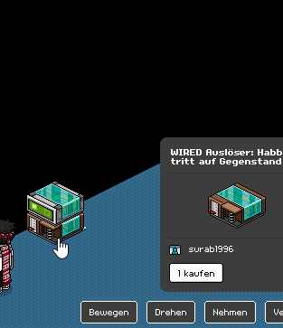
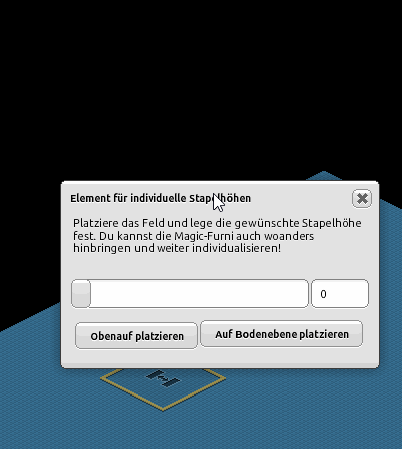
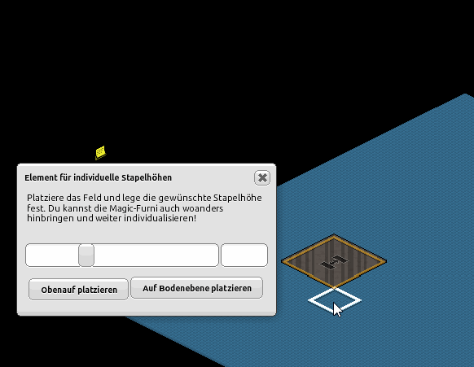
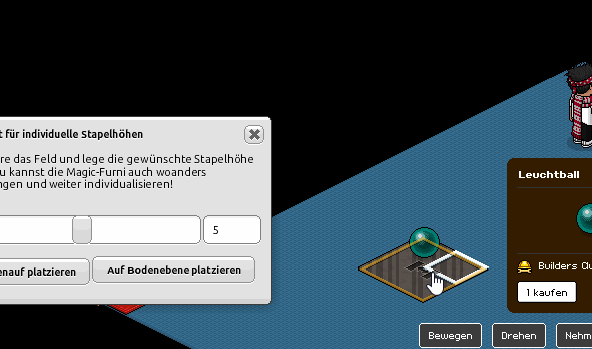
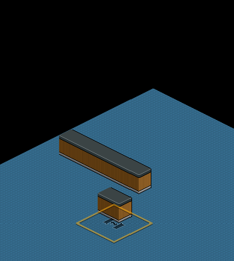
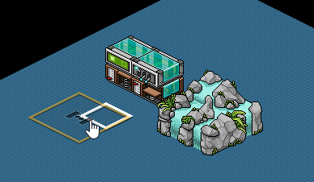
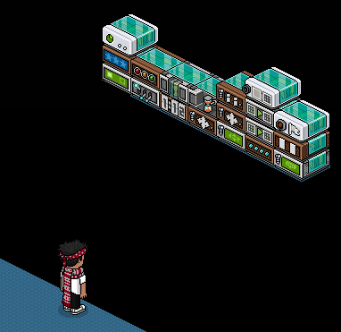

|
|
|
Nr. 4: Wireds verstecken
Inhalt:
1. Einführung
2. hochdrehen
3. Stapelfeld (HC)
4. Bodenlayout Editor (BC)
1. Einführung
Wireds stehen normalerweise nicht einfachso im Raum rum. Das sieht 1. nicht schön aus und 2. versperrt es Plätze, Wege und die Sicht. Deswegen werden sie sinnvoll versteckt. Welche Möglichkeiten es hierfür gibt und wie das funktioniert wird nachfolgend erklärt. Welche Variante man verwendet ist davon abhängig was gebaut wird. Für Events werden Wireds oft anders verbaut/versteckt als für ein Büro- oder Wohnraum. Es kommt auch vor, dass man mehrere Varianten in Kombination benötigt.
2. Wireds hochdrehen
Eine kostenvermeidende Variante ist das drehen der Wireds. Vermutlich lassen sich alle stapelbaren Möbel hochdrehen. Dafür dreht man am besten den untersten Wired im Stapel und dieser springt dann an oberster stelle.
Inhalt:
1. Einführung
2. hochdrehen
3. Stapelfeld (HC)
4. Bodenlayout Editor (BC)
1. Einführung
Wireds stehen normalerweise nicht einfachso im Raum rum. Das sieht 1. nicht schön aus und 2. versperrt es Plätze, Wege und die Sicht. Deswegen werden sie sinnvoll versteckt. Welche Möglichkeiten es hierfür gibt und wie das funktioniert wird nachfolgend erklärt. Welche Variante man verwendet ist davon abhängig was gebaut wird. Für Events werden Wireds oft anders verbaut/versteckt als für ein Büro- oder Wohnraum. Es kommt auch vor, dass man mehrere Varianten in Kombination benötigt.
2. Wireds hochdrehen
Eine kostenvermeidende Variante ist das drehen der Wireds. Vermutlich lassen sich alle stapelbaren Möbel hochdrehen. Dafür dreht man am besten den untersten Wired im Stapel und dieser springt dann an oberster stelle.

Durch das Drehen des unteren Möbelstücks springt dieser an oberster Stelle
Vorteile:
- kostet nichts (großer Vorteil)
- einfach durchzuführen
- übersichtliches hochbringen
(Da man sie Schritt für Schritt nach oben dreht)
Nachteile:
- der Boden ist nicht mehr betretbar, wo das Wired gestapelt ist (großer Nachteil)
- dauert sehr viel länger als andere Varianten (großer Nachteil)
- das Doppelklicken kann schnell passieren, so könnten unbemerkt Einstellungen verändert werden
- Große Unübersichtlichkeit
Das Hochdrehen ist sinnvoll für kleine Räume in denen man nicht viele Wireds einbauen möchte. Für Events oder größere Räume wie ein Hauptquartier, wo mehr Wireds sind ist dies überhaupt nicht geeignet. Sollte man diese Variante verwenden ist es vorteilhaft die Wireds zuerst auf Möbel zu stellen, die stapelbar sind und die man sowieso nicht betreten soll und sie dann hochzudrehen. Die Variante wird aber nicht oft gebraucht aufgrund der sehr starken Nachteile.
3. Stapelfeld (HC)
Stapelfelder sind ein Muss für jeden Eventbauer. Darin lassen sich (fast) alle Möbel ineinander und aufeinander Stapeln, selbst solche die sich eigentlich nicht Stapeln lassen.
Verwendung: Durch doppelklicken auf das Stapelfeld oder verwenden klicken öffnet sich ein Fenster. Darin lässt sich die Höhe einstellen, wo man sein Möbelstück haben möchte. Die Höhe lässt sich durch 2 Möglichkeiten einstellen. Mit dem Regler kannst du bis zu der 10. Höhenstufe gehen. Dies lässt sich aber erweitern. Rechts daneben siehst du die Höhenanzeige. Dort kannst du bis zur 40. Höhenstufe gehen. Du schreibst die Zahl einfach hinein und bestätigst mit Enter. Kommazahlen werden mit dem Punkt und nicht mit dem Komma geschrieben!

Höhe des Stapelfelds lässt sich durch den Regler oder der Anzeige verändern
Dann kannst du ein Möbelstück in dem Stapelfeld hineinlegen. Achte darauf, dass du auf den Boden zielst beim hineinlegen, wenn das Stapelfeld in der Luft ist.

Um ein Möbel aufs Stapelfeld zu bekommen stellt man das Möbel so ab, als würde man es auf dem Boden ablegen
Wenn dir das zu schwer ist kannst du das Möbelstück auch vorher hineinlegen, wenn das Stapelfeld auf Bodenebene ist. Dann stellst du die Höhe ein, bestätigst mit Enter und drehst das Möbelstück damit dieser auf die Höhe vom Stapelfeld springt. Am Ende musst du nun das Stapelfeld rausnehmen.

Durch das Drehen des Möbels springt dieser aufs Stapelfeld drauf
Die Funktion “obenauf Platzieren” ist nützlich, wenn man bei einem vorhandenen Stapel etwas drauf stapeln möchte oder die genaue Höhe von einem oder mehreren Möbeln aufeinander wissen möchte. Dafür legt man das Stapelfeld im Stapel rein und drückt auf “obenauf Platzieren”, dann stellt man sein Möbelstück darauf oder liest die Höhe ab.
Achtung: die Funktion ist eher für stapelbare Möbeln ausgelegt, bei nichtstapelbaren Möbeln wird es entweder nicht gehen oder das Stapelfeld landet auf dieselbe Höhe worauf das letzte Möbel ist d. h. es ist nicht über den letzten Möbel und gibt daher nicht die genaue Höhe an und man würde dementsprechend im letzten Möbel hineinstapeln statt darauf.
“Auf Bodenebene Platzieren” lässt das Stapelfeld nach ganz unten auf dem Boden springen. Sehr hilfreich, wenn man z. B. versehentlich den untersten Möbelstück rausgekickt hatte und den wieder dahin bringen möchte. Alternativ kannst du auch das Stapelfeld selbst drehen und es landet ganz unten. Übrigens musst du nicht auf "drehen" klicken, du kannst auch die Shift/Umschalttaste ⇧ gedrückt halten und währenddessen auf das Möbel klicken welches du drehen möchtest.

Ein Möbel kann an einer beliebigen Höhe eingebaut werden
Wireds: Du kannst die Wireds sehr schnell nach ganz oben oder wo du möchtest hintun. Man muss aber darauf achten, dass man sie nicht auf die 40. Höhe anbringt, da dort nichts gestapelt werden kann. Zwischen der 30. - 35. Höhe sollte es reichen.
Du kannst die Wireds auch innerhalb eines Möbelstücks platzieren, sodass dieser nicht sichtbar ist. Dann muss man aber eins finden, dass das Wired gut versteckt. Ist aber nicht zu empfehlen, wenn man noch Anfänger ist, da u. a. die Übersicht verloren geht und bei Fehler, die man beim Einstellen gemacht hat nicht mehr so leicht korrigieren kann. Ansonsten kann man sie damit sehr gut in Dekos verschwinden lassen. Wireds funktionieren übrigens auch, wenn sie ineinander gestapelt werden.

In große Möbeln lassen sich Wireds sehr gut verstecken
Stapelfelder werden öfter verwendet als die Dreh-Variante, weil damit viel Zeit gespart werden kann. Die Variante ist gut geeignet bei wenigen bis mittel vielen Wireds.
Vorteile:
- Verwendung vom Stapelfeld lässt sich relativ einfach erlernen
- sehr genaue Höheneinstellung, was beim hochdrehen unmöglich ist
- Ineinander und Übereinander Stapeln (großer Vorteil)
- Sehr schnelles hochbringen (großer Vorteil)
Nachteile:
- der Boden ist nicht mehr betretbar, wo das Wired gestapelt ist (großer Nachteil)
- beim ineinander Stapeln geht die Wired-Übersicht verloren
- HC erforderlich, außer man kauft sie nicht im Katalog
4. Bodenlayout Editor (BC)
Diese Variante ist am teuersten aber am effektivsten. Eine Bodenfläche außerhalb des eigentlichen Raumes auf einer beliebigen Höhe ist ideal, um Wireds dort abzustellen. Man muss sie nicht hochstapeln und kann sie sehr leicht und sehr schnell nach oben bringen. Dafür ist BC nötig. Die Funktion wird hier kurz erklärt.
Diese Variante ist am teuersten aber am effektivsten. Eine Bodenfläche außerhalb des eigentlichen Raumes auf einer beliebigen Höhe ist ideal, um Wireds dort abzustellen. Man muss sie nicht hochstapeln und kann sie sehr leicht und sehr schnell nach oben bringen. Dafür ist BC nötig. Die Funktion wird hier kurz erklärt.

Extra Bodenfläche für Wireds
Verwendung: Zuerst auf Einstellung klicken, dann öffnet sich die Rauminfo wo der Bodenlayout Editor zu finden ist. Klickt man dies an öffnet sich das Fenster dafür.
Unter Zeichenmodus (1) kannst du den Raum bearbeiten. Das grüne Plus steht für Boden hinzufügen. Das rote X für Boden entfernen. Pfeil nach oben heißt eine Bodenebene höher, Pfeil nach unten eine Bodenebene nach unten. Die Tür mit grünem Plus ist der Eingang. Unter Höhe einstellen (2) kannst du direkt sagen wie hoch eine Bodenfläche sein soll. Blau ist die unterste Höhe und Violett die Höchste. Auf der linken Seite bearbeitet man den Boden im Raum. Rechts daneben sieht man wie dies dann aussieht. Auf ausgegrauten Flächen sind Möbel und dieser Boden kann nicht bearbeitet werden solange Möbel drauf sind. Bei Richtung eingeben (3) kannst du einstellen in welcher Richtung man steht, wenn man den Raum betritt. Die Wandhöhe (4) kann eingestellt werden indem der Haken gesetzt wird und der Regler daneben eingestellt wird. Mit Importieren/Exportieren (5) kann ein Code kopiert werden den man in anderen Räumen einfügen kann (auch unter Importieren/Exportieren). Wenn man dann auf speichern geht wird das Bodenlayout übernommen vom Raum woher man den Code kopiert hat.
Wireds: Nachdem man eine Reihe ganz oben oder fast ganz oben (wenn die Stapel größer sind) erstellt hat können dort Wireds einfach abgelegt werden. So können Bugs behoben werden und Einstellungen im nachhinein einfach geändert werden. Sehr empfehlenswert für viele Wireds und perfekt für Events. Auch für eine kleinere Anzahl an Wireds kann man die Variante sehr gut gebrauchen.
Vorteile:
- schnellste Variante
- einfachste Variante
- wenig Aufwand (großer Vorteil)
- einfache Höheneinstellung
- Wireds können sehr übersichtlich sortiert und abgestellt werden (großer Vorteil)
Nachteile:
- BC erforderlich (großer Nachteil)
Welche Variante am Ende verwendet wird bleibt einem selbst überlassen, da man herausfinden muss welche am besten zu einem passt. Sehr oft werden verschiedene Varianten zusammen verwendet. Z. B. sieht man oft, dass Wireds mit BC auf hochgestellte Böden abgelegt werden und dabei ineinander gestapelt sind oder Blockaden davor stehen.
Zusammenfassung, was ist wichtig?
- Wireds lassen sich auf ganz unterschiedliche Weise verstecken
- Wireds können durchs Drehen hochspringen bis man sie nicht mehr auf normaler Sicht sieht
- Mit dem Stapelfeld lassen sich beinahe alle Möbeln ineinander, aufeinander oder untereinander Stapeln
- Die Maximale Höhenstufe beträgt (normalerweise) 40, darauf können keine Möbel gestapelt werden
- Mit dem Bodenlayout Editor lassen sich Böden leicht und schnell erstellen
- Wireds kann man am übersichtlichsten mit extra Böden, die ganz oben liegen verstecken